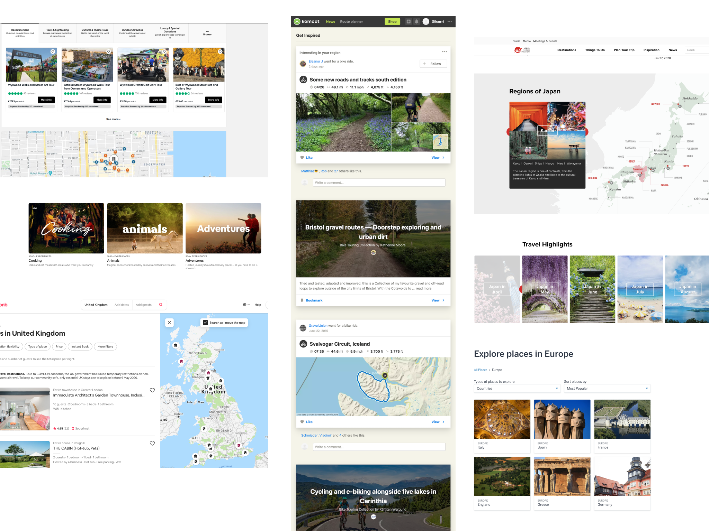
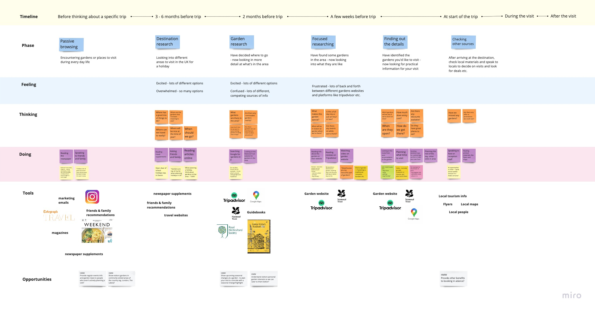
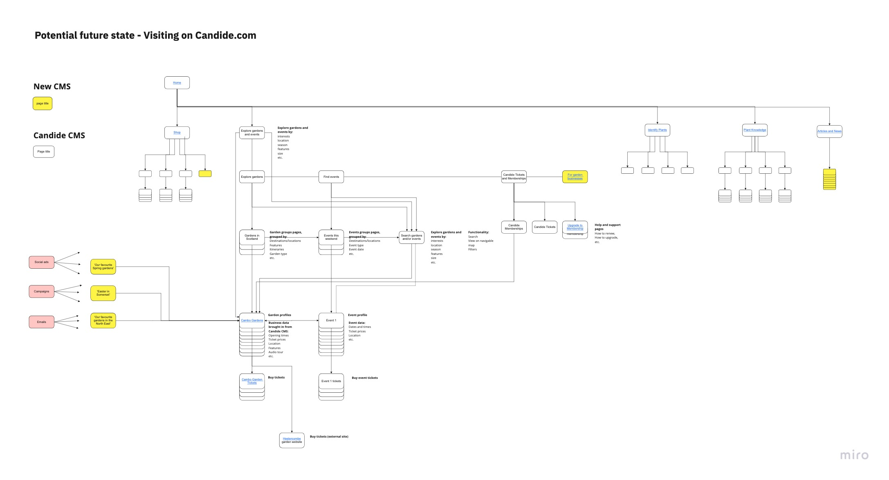
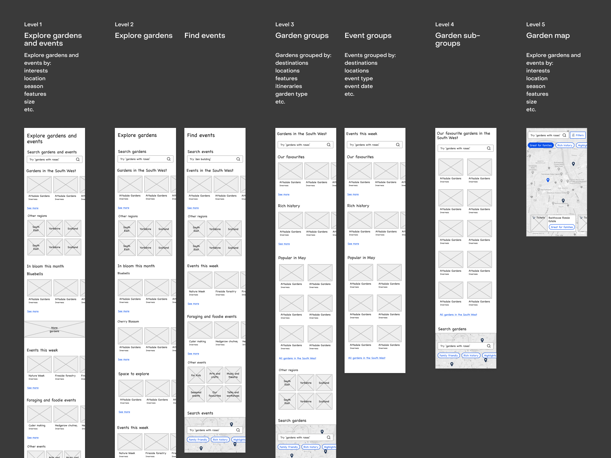
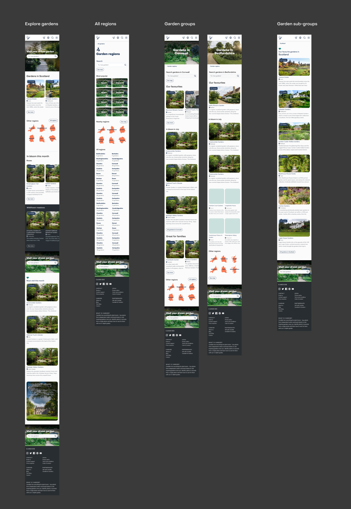
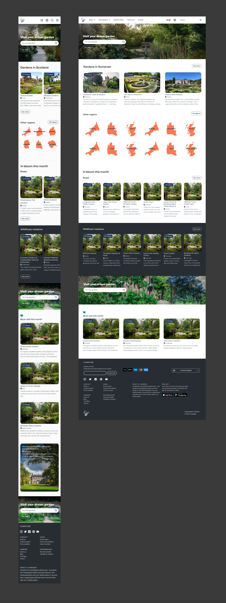
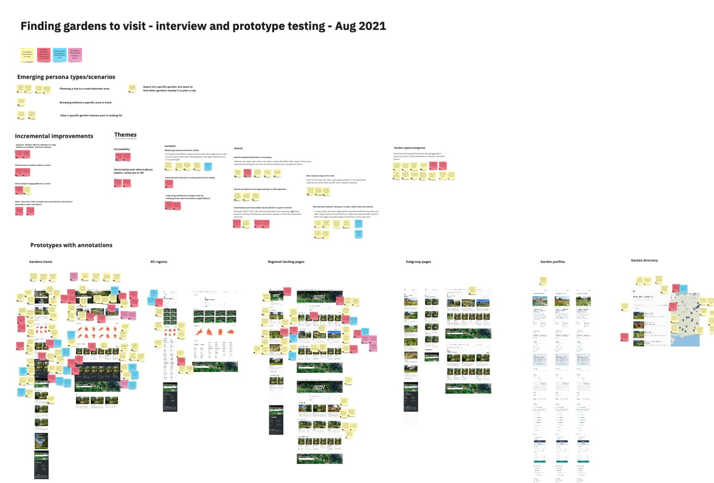
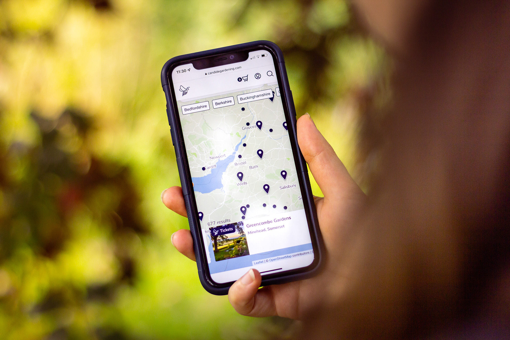

Travel & TourismB2CMobileResponsive WebProduct
Candide —
What I did
Prototyping
Interface design
Information architecture
User interviews
User journey mapping
User testing
Team
I worked as product designer and researcher, in collaboration with a product manager, the growth team, and engineers.
Context
There are thousands of garden venues and public gardens across the UK, and the garden tourism industry is worth billions to the UK economy each year.
Visiting gardens could even be the most popular tourism activity of them all, with both overseas and domestic visitors - 2 out of the 10 most popular attractions in the UK are gardens. During COVID, public gardens were also a welcome solace and space to meet others safely. Candide had built up a large database of public gardens to visit in the UK and overseas, but were not making this data available to people looking for gardens to visit online. We were uniquely placed to help visitors discover the widest range of garden venues, from large groups like the National Trust, to small independent gardens, but were only showcasing these gardens in our mobile app.
Outcome
The new web experience enabled Candide to sell tickets for partner gardens online, supporting our B2B SaaS business with additional revenue and diversifying garden venues' visitor acquisition channels.
It also gave garden visitors the most comprehensive and visual directory of gardens available online, with National Trust, RHS and smaller independent gardens all in one place.
Exploring the problem
I had been conducting generative research with keen garden visitors, to learn more about how they find gardens and events to go to, their recent garden visits, and their visiting and ticket-buying habits in general, so we could improve these experiences for them. One of the things this research highlighted was the preference for web experiences when searching for gardens and places to visit, which was a key motivator for us to move our garden discovery tools out of the app and onto the open web. For some visitors, the gardens in an area are a deciding factor in going there. But generally, visitors start looking for gardens to visit once they've decided the area they're going to.
“We went to Anthony House in Devon - the area is the most important factor in planning, then the gardens there”
Regular garden visitor
Seasonality obviously affects a visitor’s experience, and some gardens are renowned for their plants and flowers at certain times of year, so the seasons can be important when planning. And regular visitors often have a mental calendar of which gardens are best in which season.
“Seasons are important - Rosemoor in Torrington for Roses, Kingston Lacey is snowdrops"
Regular garden visitor
We found that garden discovery can be split into two general types - actively looking for new gardens to visit, when visitors seek out information on gardens and passively discovering gardens, by reading/hearing about them during daily life. An active search is generally defined by location - either in your area, or an area you're planning to visit.
Solutions and ideas
We ran a 1 day workshop to share inspiration and ideas, and create solutions to effectively serve garden visitors and make the most of our garden data. We looked to examples from the wider tourism sector, including travel and mapping products and services that we could learn from. We also highlighted the key areas where we could improve the garden discovery and visit journey, selecting key ‘How Might We’ questions to address with our solutions - such as “HMW… Show upcoming seasonal changes at a garden, so you can plan your visit to coincide with a seasonal change/highlight?”

We also mapped out some of the key user scenarios that I’d identified from research with visitors, like looking for multiple gardens to visit while planning a holiday, and looking for new gardens to visit closer to home.

Refining the ideas
After the workshop, I mapped and wireframed some initial ideas for the structure of garden discovery on the Candide website, with input from SEO specialists and the growth team to ensure we were maximising our potential for organic reach. During this time, we were also investigating using a new CMS to publish certain types of content, so there were other considerations to factor into mapping out the information architecture.


I used a JSON to Figma plugin when working on the interface, to enable me to easily work with accurate garden data at scale, for all the regions and thousands of gardens we would feature on the site.


Testing and iterating
I tested the initial prototypes to see how they worked for visitors, and to identify any issues or opportunities to improve. I conducted these tests in two parts - starting as an interview, to generate insights and explore the subject of visiting gardens, and leading on to observing the participants interacting with the prototypes. This meant we learnt lots about the participants' experiences and preferences when visiting gardens, and also got practical usability feedback about how the prototypes worked for them.

Some of the key things we identified were the different scenarios where you might use a tool like this - whether you were planning a trip to an unknown area and wanted to explore the gardens there, to having a particular interest in say, water gardens, and wanting to find some to visit. We also learnt a lot about why people might want to see a mix of local and further afield gardens, compared to when they’d like to see results on a map, which reaffirmed our decision to lead with an inspiring experience, with map-based results for more detailed searches. We took these learnings into our work on the next iteration.

We built the first version of Explore gardens using Algolia, which helped us to show gardens dynamically based on visitors locations, and in future their preferences. It also gave us the tools to order search results and collections visually, which would be invaluable for content and marketing colleagues. Explore the site
Future iterations
Better support for international markets. Explore making the many different types of garden features and styles accessible and inspiring. Event discovery and promotion.
Credits
Photography by Chris D'Agorne